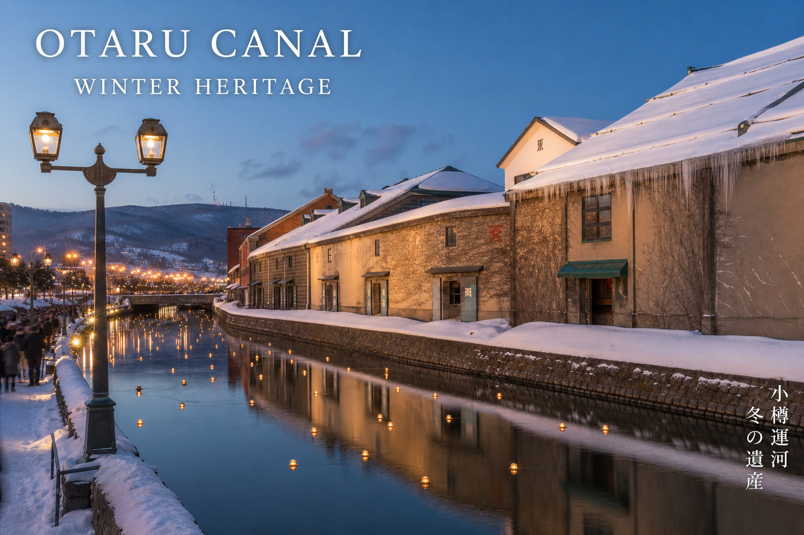

動線
広域ハブのリアルタイム導線
更新 6/23 9:00
札幌中心部
約60分
路線バス・車
小樽中心部
約40分
道道1号（冬期夜間規制あり）
定山渓温泉
約30〜40分
定山渓スキーライナー
新千歳空港
約100分
車・貸切送迎
Mobility
広域モビリティの
力学と制約。
動線設計は体験の質を直結的に左右します。
| 区間 | 交通手段 | 目安 | 留意点 |
|---|---|---|---|
| 定山渓温泉 ⇔ 札幌国際 | 定山渓スキーライナー / 車 | 約30〜40分 | 宿泊者専用バスでストレスフリー |
| 札幌中心部 ⇔ 札幌国際 | 路線バス / 車 | 約60分 | 日帰りスキー客の主動線 |
| 小樽中心部 ⇔ 札幌国際 | 道道1号 小樽定山渓線 | 約40〜50分 | 冬期19:00〜翌7:00 夜間通行止め |
| 新千歳空港 ⇔ 札幌国際 | 車 / 貸切送迎 | 約100分 | HNWI向けハイヤー手配の確実性 |

厳選ガイド
宿・温泉・飲食——詳細は各ガイドへ
広域圏の厳選施設は子ページに集約。電話・公式リンク・マップ付き。
周遊プラン
日中周遊、
夜はエリア内で。
夜間通行規制を逆手にした広域パッケージ設計。
ゴールデントライアングル01
札幌国際スキー場
朝イチのパウダー。ゴンドラ山頂1,100m
02
定山渓スキーライナー
宿泊者バスで雪道運転を回避
03
小樽・政寿司
港町の職人技。サンセット前のディナー
04
定山渓・ゆらく草庵
貸切風呂で文化摩擦なく雪見入浴
05
札幌・GARAKU
翌日は都市部でスープカレー
Access
所在地
〒061-2301
北海道札幌市南区定山渓937番地先
札幌中心部から車・バス約60分
TEL 011-598-4511（札幌国際スキー場）